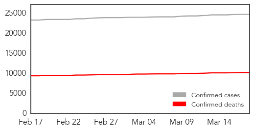

30 Day Trends
Web: 0 alerts, 0 warnings
Twitter: 0 alerts, 1 warnings
814 new deaths (10179 total)
1448 new cases (24666 total)
Top Articles:
- 1.000
- American who contracted Ebola now in critical condition
- 1.000
- US officials defend Ebola response; nurse moved
- 1.000
- Plymouth University research could prevent fresh outbreaks of Ebola
- 1.000
- Liberia: WHO Confirms No Ebola Case in Liberia in Two Weeks
- 1.000
- IN-DEPTH RADIO :: UPDATE: Patient tests negative for Ebola at Sunnybrook :: News
- 1.000
- Patient at Toronto hospital tests negative for Ebola
- 1.000
- Guinea sees spike in new Ebola cases, including 3 infected doctors
- 1.000
- 10 US charity staff to leave Sierra Leone amid Ebola scare
- 1.000
- Latest: 15 American aid workers have returned to U.S. soil for Ebola monitoring
- 1.000
- 4 more aid workers flown back to US for Ebola monitoring
- 0.999
- Ebola diaries: First signals - March 2014
- 0.999
- Ebola could make comeback as spotlight on it fades
- 0.999
- Bill Gates: The Ebola Crisis Was Terrible. But Next Time Could Be Much Worse.
- 0.999
- Ebola: 4 more aid workers flown back to US for monitoring
- 0.999
- The Next Epidemic — Lessons from Ebola — NEJM
- 0.999
- Guinea Ebola cases rise; three doctors infected
- 0.999
- Four more aid workers flown back to U.S. for Ebola monitoring
- 0.999
- The Ebola Epidemic Isn’t Only Threatening Guineans’ Health · Global Voices
- 0.998
- Liberians Worry Ebola Could Return From Guinea, Sierra Leone
- 0.998
- Sierra Leone plans another shutdown to stop Ebola's spread
- 0.998
- Kenya : Guinea Ebola cases rise, three doctors infected
- 0.998
- Violence against women rises in Ebola-hit nations: ministers
- 0.997
- Sunnybrook investigating possible Ebola case
- 0.996
- 4 more aid workers flown back to U.S. for Ebola monitoring
- 0.995
- Health workers returning from Ebola-hit courtiers face stigma-Red Cross
- 0.994
- Gambia holds simulation exercise on Ebola preparedness
- 0.993
- African tourism acts to shake off Ebola stigma
- 0.993
- Four PIH Clinicians Returned to United States for Monitoring
- 0.991
- Aid workers flown home for Ebola monitoring
- 0.990
- Patients Being Monitored for Ebola in Amarillo
- 0.988
- UPDATE: Two separate public health concerns surface in Amarillo
- 0.982
- Americans exposed to Ebola patient return from Africa for monito
- 0.982
- An American aid worker with Ebola receives speedy care, while a Sierra Leonean colleague is 'left behind'
- 0.980
- Robert Plant hits Las Vegas May 28 with the Sensational Space Shifters
- 0.980
- Medical marijuana for dogs and cats? Nevada lawmaker says yes
- 0.980
- Woman bites robber who stole her purse
- 0.980
- Police: Elkton man charged as drug kingpin
- 0.980
- Woman recounts fighting off attacker in robbery
- 0.980
- Baltimore Ravens RB Pierce charged with drunken driving
- 0.980
- With no ‘eraser’ Obekpa, San Diego St. plans to attack the paint
- 0.980
- Two reasons why Dayton is a safe bet against Boise State
- 0.980
- Detectives release photos of shooting suspect
- 0.980
- 'Egg Crack Challenge' raises money for diabetes
- 0.980
- American hoops star drinks up her millions in Russia
- 0.980
- Hazing victims to testify in support of tougher penalties
- 0.980
- Financial Fraud Scheme in Hollywood
- 0.980
- Allow adjuncts to unionize
- 0.980
- Baltimore police: 1 person stabbed, seriously hurt at Morgan State University in Maryland
- 0.980
- Baltimore restaurant sales drop amid growth almost everywhere else
- 0.980
- Live-streaming apps dominate buzz at SXSW; Kimmel begins Austin shows
Showing top 50 articles...
Top Tweets:
- 0.946
- Monday marks 1 yr since declared an Ebola outbreak in W Africa. The outbreak remains today. EndEbolaNow KeepFighting WeCanFightThis
- 0.944
- 852 healthcare workers have contracted Ebola in 3 outbreak countries - 2x more cases than largest prior outbreak. 492 HCWs have died. 2/2
- 0.912
- Ebola Update: 24666 confirmed probable and suspected cases reported in 3 most affected countries with 10179 deaths. EbolaResponse
- 0.873
- RT: Guinea reported 95 confirmed Ebola cases last week highest number this year. This outbreak is still far from over. http://t.c…
- 0.863
- Guinea Ebola cases rise three doctors infected - Fox News http://t.co/sZPAtJCPKX ebola EVD
- 0.832
- Ebola diaries: First signals - March 2014 - World Health Organization (press release) http://t.co/XOlKZRPEs7 ebola EVD
- 0.774
- From Fearful to Fearless: Survivor Tejanie Golafaley Goes From Ebola Denier to Ebola Fighter https://t.co/VGRoihvgwg
- 0.757
- Liberians Worry Ebola Could Return From Guinea Sierra Leone - Voice of America http://t.co/51Ih9EAtEd ebola EVD
- 0.705
- RT: Bill Gates: Time to make a 'war game' for infectious disease http://t.co/tnZpAEVHJB ebola virus health infection ht…
- 0.697
- Sierra Leone plans another three-day countrywide shutdown to stop Ebola's ... - U.S. News & World Report http://t.co/OyU5tDKDCp ebola EVD
- 0.673
- RT: PHEEpiConf starting today includes presentations on Ebola & flu to genomic sequencing & antimicrobial resistance http://t.…
- 0.673
- RT: 14 new Ebola cases confirmed in SierraLeone today. 8 from Kambia district on border with Guinea Freetown & environs 4 …
- 0.673
- RT: 14 new Ebola cases confirmed in SierraLeone today. 8 from Kambia district on border with Guinea Freetown & environs 4 …
- 0.580
- Patient suspected of having Ebola treated at Sunnybrook - Toronto Star http://t.co/R5W4fLe8cL ebola EVD
- 0.562
- What is the African Union Support to Ebola Outbreak in W.A(ASEOWA) role?.http://t.co/8Fx1iIU2e3 Africaagainstebola @_AfricanUnion
- 0.552
- The Ebola outbreak in Liberia and SierraLeone is clearly not over yet. Africaagainstebola http://t.co/FTNQj6N8r3
- 0.529
- Une infection par le virus Ebola sur cinq touche un enfant http://t.co/gbmwJYxuoa via
- 0.516
- FDA panel to discuss Ebola vaccine development in May - Reuters http://t.co/Vb7jpjiKnm ebola EVD
- 0.500
- Three doctors infected with Ebola in Guinea amid new cluster of cases http://t.co/8faU8u3YtJ
Web/News Articles

Tweets

Human Impact
Article Locations

Article Confidences